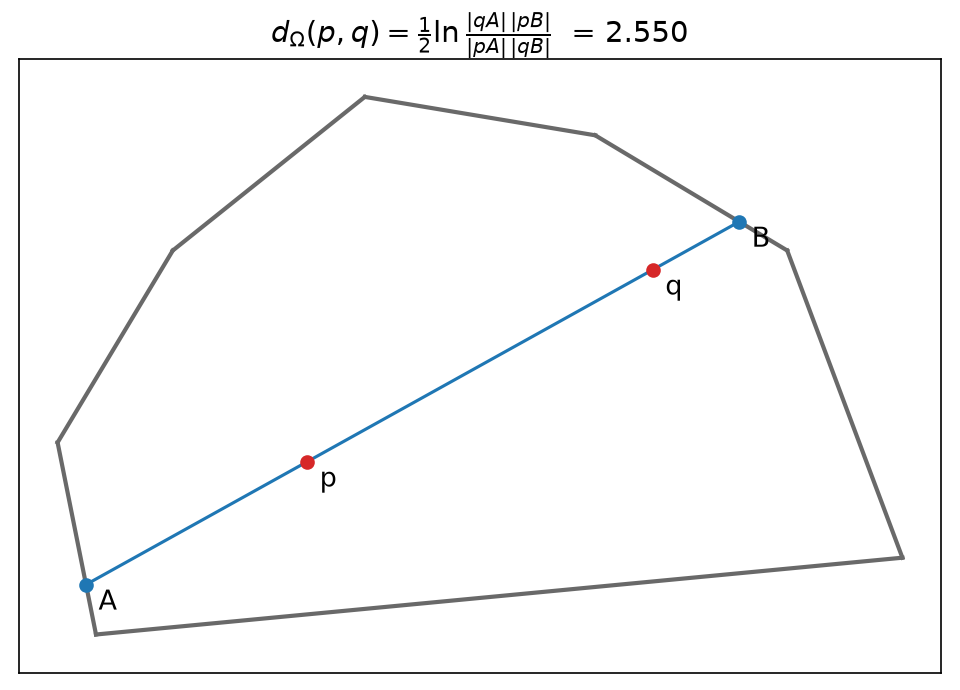
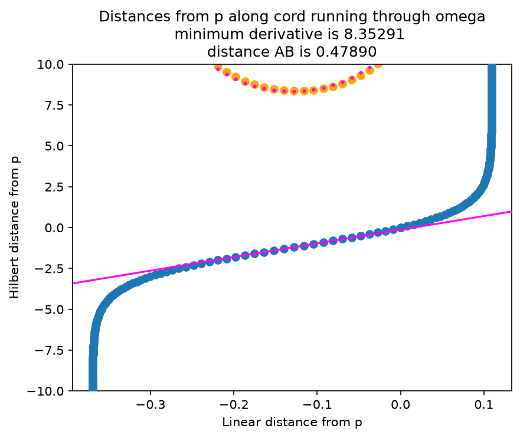
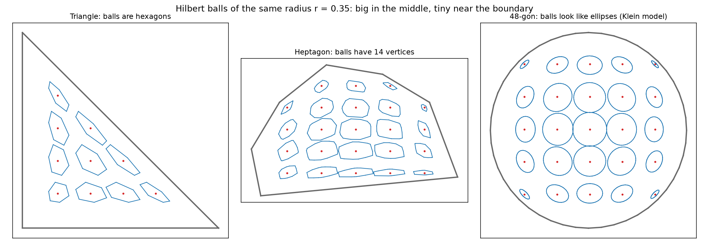
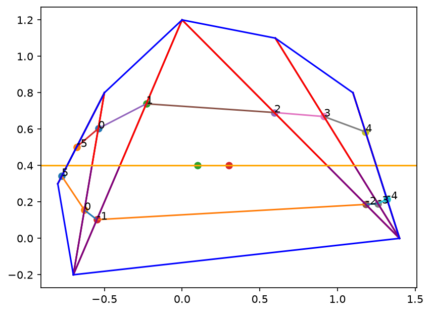
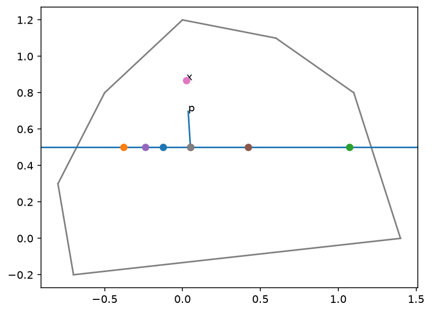
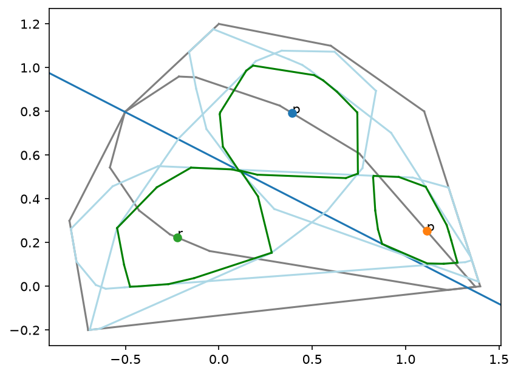
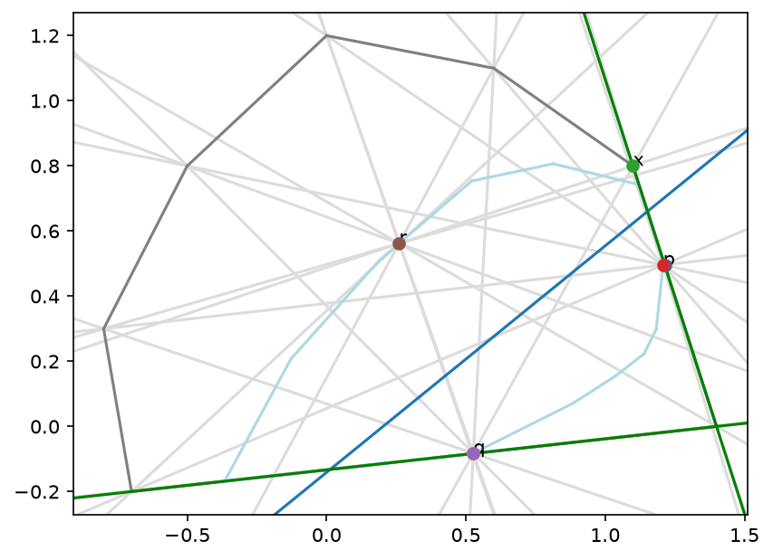
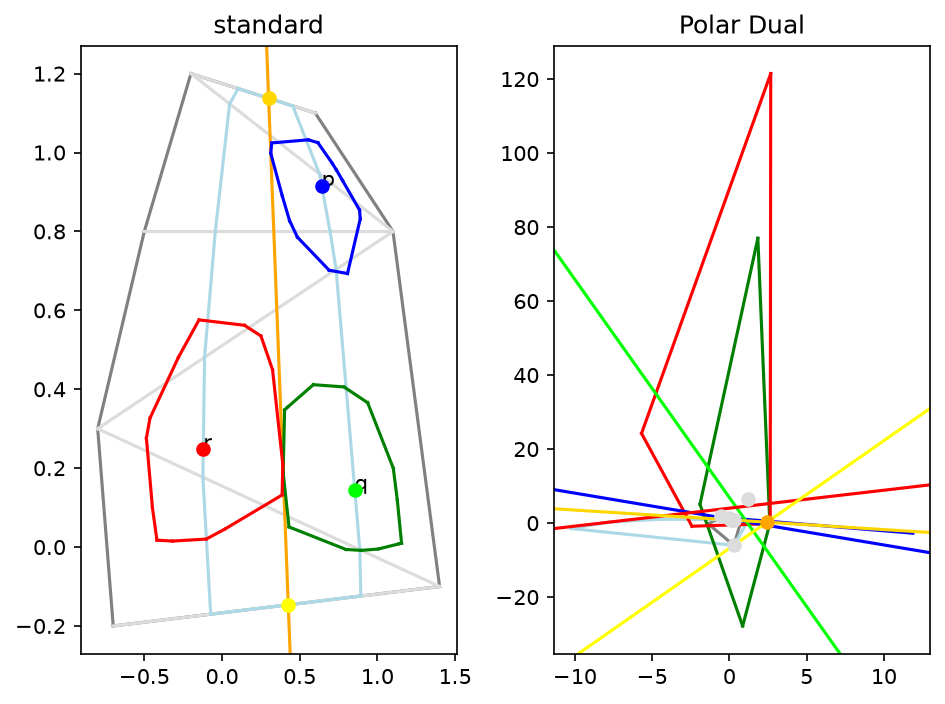
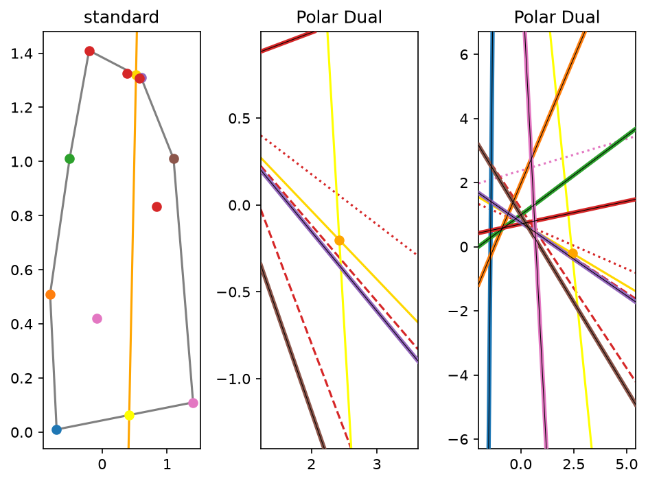

Philbert: seeing the Hilbert metric
Philbert is the visual sandbox used during the exploratory phase of Support Vector Machines in the Hilbert Geometry (Acharya, Gezalyan, Vanecek, Mount, Arya — WADS 2025). The paper asks: given two classes of points inside a convex polygon Ω, which line separates them with the largest margin, when distance is measured in the Hilbert metric of Ω instead of the Euclidean one? Before proving anything we needed to see how this geometry behaves: what its balls look like, how distance to a line works, and which combinatorial pieces an algorithm would have to search over. The pictures below walk from the definition to the SVM question, roughly in the order we learned it.
The metric

01 Distance is a cross-ratio on a chord
To measure from p to q, extend the segment until it hits the boundary of Ω at A (beyond p) and B (beyond q). The Hilbert distance is half the log of the cross-ratio of those four collinear points. Only the chord matters, so straight segments are always shortest paths (in a polygon, not always the only ones). Cross-ratios survive projective maps, so the whole metric is invariant under projective transformations of Ω.
Colours: Red: the two points p and q. Blue: the chord through them and its boundary endpoints A, B. Grey: Ω.

02 The boundary is infinitely far away
Walk along one chord from p. Horizontal axis: Euclidean offset from p; blue curve: signed Hilbert distance. Near the middle the curve is almost linear, but at both ends it shoots off to ±∞: as you approach the boundary every Euclidean step costs more and more. The magenta/orange points (top) are the slope of the blue curve; the magenta line marks its minimum, the spot on the chord where Hilbert distance grows most slowly per unit of Euclidean length.
Colours: Blue: Hilbert distance from p. Orange: its slope measured numerically between neighbouring samples; magenta: the same slope from the exact derivative (they agree, which is the check). Magenta line: tangent at the point of minimum slope.
03 Balls are polygons whose vertices ride on spokes
The Hilbert ball of radius r about p, growing from 0 to 2.5 (fainter rings mark every 0.5). In a polygon with m sides the ball is a polygon with up to 2m vertices, and every vertex lies on a spoke: a grey line through p and a vertex of Ω. As r grows the ball takes on Ω's shape, but never reaches the boundary.
Colours: Red: the centre p. Dark blue: the current ball. Light blue: balls at r = 0.5, 1, 1.5, …. Light grey: spokes. Dark grey: Ω.

04 Same radius, very different balls
Every blue ball has the same Hilbert radius. They are large in the middle and squashed flat near the boundary, and their shape follows Ω: hexagons in a triangle, 14-gons in the heptagon. In a 48-gon the balls become smooth ellipses: in the limit of a disk the Hilbert metric is the Klein model of hyperbolic geometry.
Colours: Red dots: ball centres. Blue: the balls, all with the same radius. Grey: Ω.
05 A basic primitive: tangent from a point to a ball
Many later steps need the tangent line from an outside point to a Hilbert ball. Because the ball is a convex polygon this is a binary search over its vertices, O(log m). Each frame is a different random outside point and the tangent found. Numbers are the ball's vertex indices; here, in a triangle, the ball is a hexagon.
Colours: Orange outline: the Hilbert ball. Blue dot and segment: the outside point and its tangent to the ball; orange dot: the tangent vertex found. Grey: Ω (here a triangle).
Distance to a line: the margin

06 The ball about a line
An SVM margin is a distance from points to a line, so the key shape is the set of points within distance r of a line ℓ (orange). Each spoke joins a vertex of Ω on one side of ℓ to a vertex on the other; stepping distance r along every spoke from where it crosses ℓ gives the vertices of the ball about ℓ. Unlike the Euclidean case, this is not a strip with parallel sides; it bends toward the vertices of Ω (cf. Fig. 5 of the paper).
Colours: Blue: Ω. Orange: the line ℓ (the two dots on it define it). Grey: spokes; red and purple: the two halves of each spoke on either side of ℓ. The numbered, multicoloured outline is the ball about ℓ; its segment colours only tell edges apart.

07 Nearest point on a line
For a query point p, the lines from p through each vertex of Ω cross ℓ at a handful of candidate points (coloured dots). The closest point of ℓ in Hilbert distance is always one of these candidates, so distance-to-a-line reduces to a small discrete problem; the short segment shows the winner. x marks the point at the same Hilbert distance from p on the opposite side.
Colours: Blue: the line ℓ. Grey: Ω. The coloured dots on ℓ are the candidate nearest points; their colours only tell them apart.
08 Which vertex is responsible? (radius growing)
Fixed line, growing radius. Points sampled on the boundary of the line's ball are coloured by which vertex of Ω (same colour) defines their closest point on ℓ. The boundary splits into a few arcs, each governed by one vertex. These pieces are the combinatorial structure an exact algorithm has to search.
Colours: Each vertex of Ω has its own colour, and every sampled boundary point takes the colour of the vertex that determines its nearest point on ℓ. Grey: Ω, ℓ and the spokes.
09 …while the line spins
Same colouring at fixed radius, while ℓ rotates about the centre of Ω. Arcs appear, merge and change owner as the line's direction changes.
Colours: Same colouring as above: each boundary point takes the colour of the Ω vertex that determines its nearest point on ℓ.
10 …while the line slides
The line translates across Ω. Near the boundary the ball about ℓ flattens dramatically: the same Hilbert margin is a tiny Euclidean margin there.
Colours: Same colouring as above; the numbers label the ball's vertices.
Toward the Hilbert SVM
11 Common tangents of two balls depend on the radius
Equal-radius balls about p and q, with their four common tangents; pink is the ball about the line pq. The two outer tangents (blue, orange) barely move, but the two cross-tangents (red, green), the candidate separators, swing sharply as r grows. So the best separator cannot be found at a single radius. The paper's planar algorithm instead searches over r using exactly these cross-tangents (cf. Fig. 10).
Colours: Black: the two balls. Red and green: cross-tangents (they pass between the balls). Blue and orange: outer tangents. Pink: the ball about the line pq. Grey: Ω.

12 Three points at margin 1
Points p and q (one side) and r (other side) are sampled on the boundary of the radius-1 ball about the blue line, so all three are at Hilbert distance exactly 1 from it. Their own radius-1 balls (green) each just touch the line. Light-blue outlines are the balls about the lines pq, pr and qr.
Colours: Blue line: the separator. Green: radius-1 balls about each of p, q, r. Light blue: balls about the lines through pairs of them. Grey: Ω and the separator's own ball. Point colours only label p, q, r.

13 Three support points pin the separator
In the plane the optimal separator is held in place by three support points (d + 1 in dimension d, Lemma 7 of the paper). Grey lines are spokes from p, q, r; the green lines are the best two-point separators of (p, r) and (q, r). x is found by binary search along one of them for the point equidistant from q and r. This is an exploratory attempt at the three-point problem the paper later solves exactly.
Colours: Light grey: spokes from p, q, r. Light blue: the ball about the blue line. Green: the two-point separators. Point colours only label the points.
Detour: the polar dual

14 Lines become points
Under polar duality a point (a, b) becomes the line ax + by = 1 and vice versa, so 'find the best line' becomes 'find the best point'. Left: three Hilbert balls and a separating line in Ω; right: the same objects in the dual plane.
Colours: Each colour follows one object across both panels. Blue, green and red: the three points and their balls (a point becomes a line of the same colour in the dual). Orange: the separating line, which becomes a single orange point in the dual. Gold/yellow: where that line meets the boundary. Light blue: the ball about the line. Grey: Ω and its spokes.

15 Support vectors in the dual
Many points on the margin of a line (left, colour-coded) and their dual lines (middle, with a zoom on the right). Points at the same margin become lines arranged around the dual point of the separator.
Colours: Left: the vertices of Ω have their own colours, and each support point takes the colour of the vertex that determines its nearest point on the line (as in 08 to 10). Middle and right: each support point's dual line in the same colour; dotted/dashed only separates overlapping lines. Thick lines with a black core are the duals of Ω's vertices. Orange: the separator and its dual point.
16 Growing balls, side by side with their duals
The same configuration as above (a line ℓ and three points at distance 1 from it, on both sides), with all the Hilbert balls growing together, and the dual on the right. A line tangent to a ball becomes a point on that ball's dual curve, so the separator ℓ (the orange dual point) has margin r exactly when it sits on all three dual curves. Watch them sweep in and meet at the orange point at r = 1 (the video pauses there), then pass beyond it. Balls that miss the origin dualise to two-branch, hyperbola-like curves.
Colours: Blue, green and red: the balls about p, q, r and their dual curves (dashed: the dual line of each point). Orange: ℓ and its dual point. Pink: the ball about ℓ and its dual. Grey: Ω and its dual.
17 Finding the separator: tangents become crossings
Now ℓ is unknown, and we search for it. Left: the balls about p, q, r grow, and for each pair we draw the lines tangent to both that keep p and q on one side and r on the other (outer tangents for p, q; cross-tangents for r with each of them). Right: in the dual each ball is a curve, and a line tangent to two balls is a point where their two curves cross. As r grows the three pairs of crossings drift together, and at the margin r = 1 they merge into one point: a single line tangent to all three balls, the separator (orange). Past the margin the balls about p and r overlap, their cross-tangents vanish, and no wider separator exists. This dual search for three curves meeting at a point is the route we explored and dropped; the published algorithm runs the equivalent search in the primal, over r and the cross-tangents.
Colours: Blue, green, red: the balls about p, q, r (left) and their dual curves (right). Gold: tangents shared by p and q; purple: by p and r; brown: by q and r. Each coloured line on the left is the same-coloured dot on the right. Orange (at the margin only): the separator ℓ and its dual point. Grey: Ω and its dual.